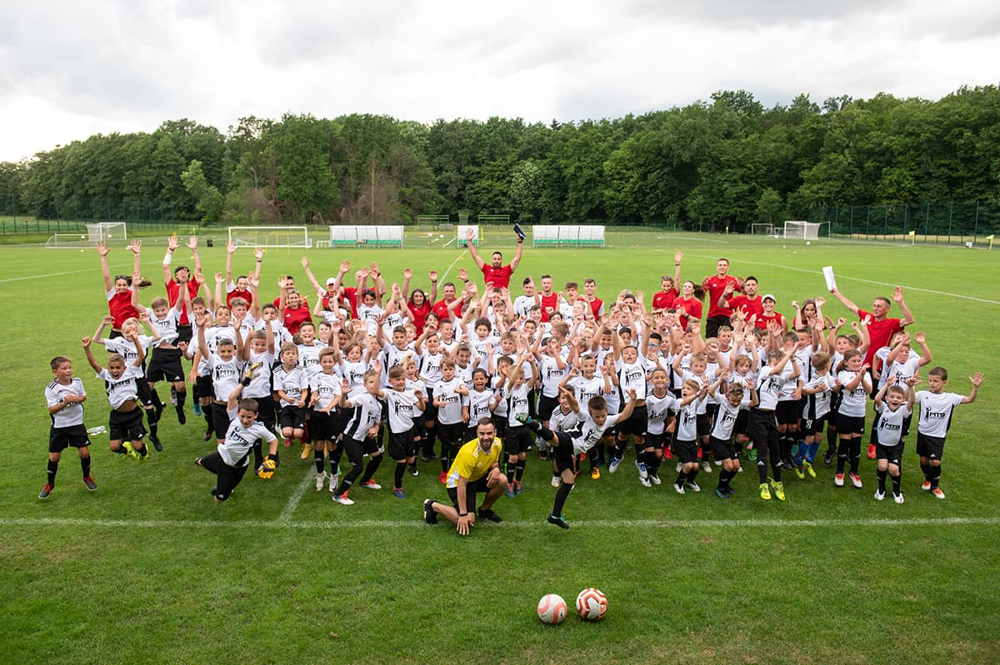
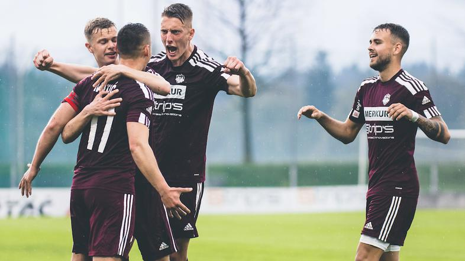
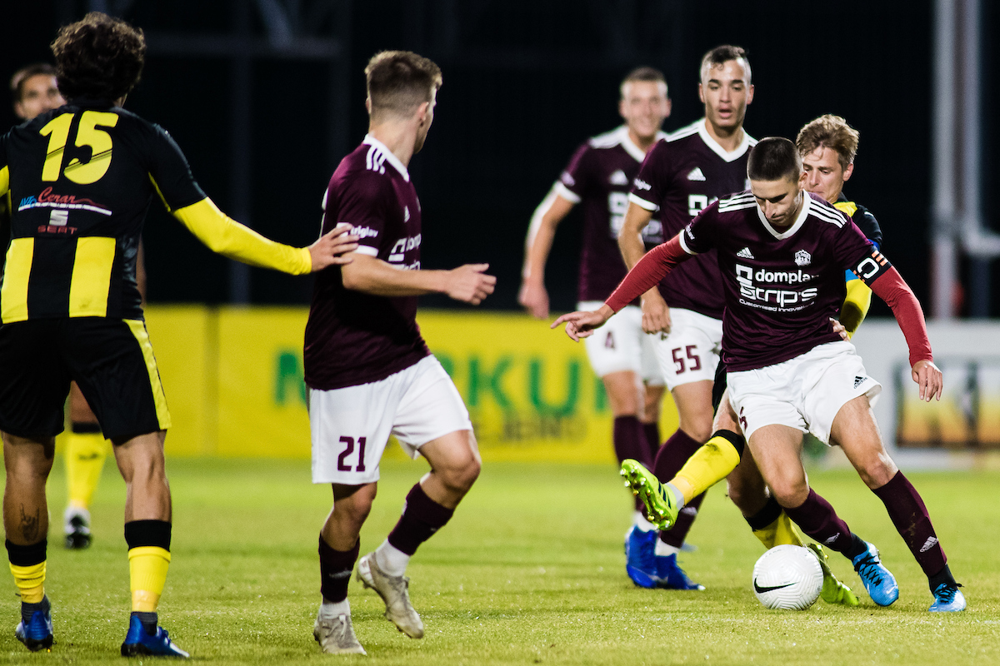
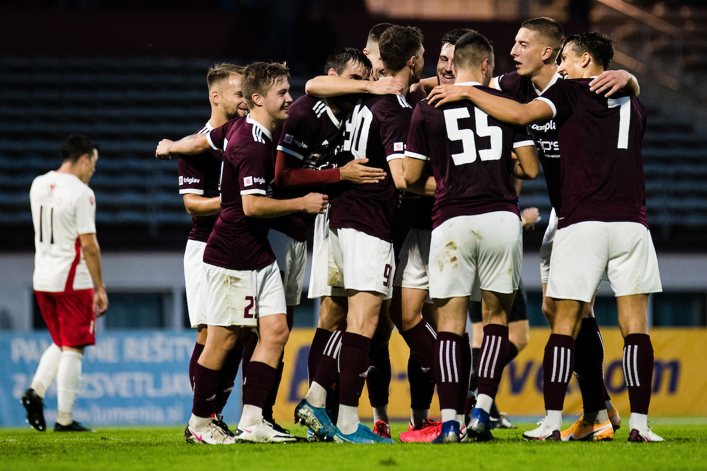
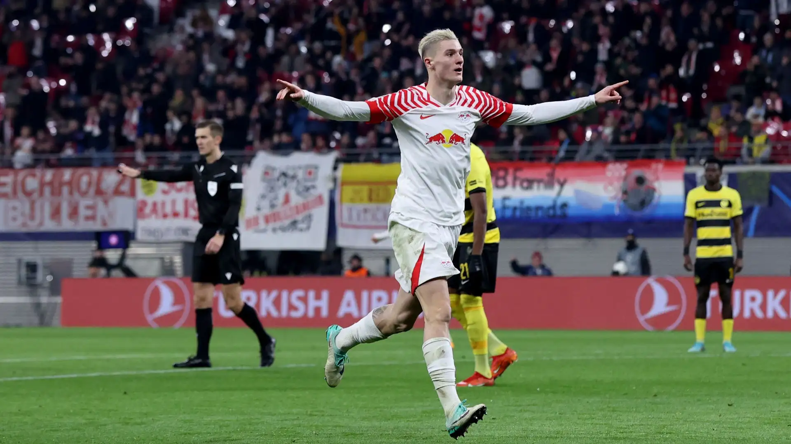
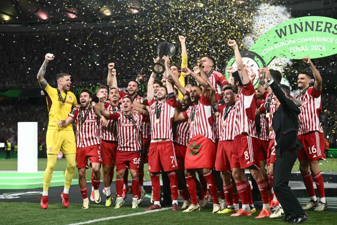

Leto 2012

SFSA agencija je začela svojo pot leta 2012 kot prepoznaven nogometni kamp, osredotočen na razvoj mladih talentov. V teh začetkih smo že takrat izkazovali predanost kakovosti treninga in osebnega razvoja vsakega igralca. Z osredotočenostjo na tehniko, taktiko in fizično pripravljenost smo postavili temelje za rast v agencijo, ki danes ponosno predstavlja igralce po vsem svetu. Naša zgodba se je začela s strastjo do nogometa in predanostjo vodenju igralcev skozi vsak korak njihove kariere, od začetkov na kampu do dosežkov na največjih nogometnih odrih.
leto 2013-2016

V obdobju med leti 2013 in 2016 je SFSA agencija utrdila svoj položaj z združitvijo z NK Triglavom, kjer so naši igralci doživeli nadaljnji razvoj. Triglav je v tem času napredoval iz druge v prvo slovensko Telekom ligo, kar je predstavljalo pomemben mejnik. Kljub temu je ekipa nato padla nazaj v drugo ligo in se na koncu leta 2016 komaj obdržala v drugi ligi, kar je bila za nas in naše igralce izzivna, a poučna izkušnja, ki nas je še bolj povezala in okrepila za nadaljnje izzive.
leto 2017 - 2019

V obdobju med leti 2017 in 2019 je bil NK Triglav v ospredju slovenske nogometne scene, ko se je vrnil v prvo slovensko Telekom ligo in tam ostal vse tri sezone. V sezoni 2017/18 smo v SFSA agenciji dobili še dodatno dimenzijo s prihodom vrhunskih igralcev, kot so Rayan Cherki, Andrey Santos in John Kennedy. Z njimi je Triglav po dolgem času osvojil Pokal Slovenije ter se uvrstil na končno 3. mesto med 16 ekipami v ligi. Kljub uspehu so vsi trije igralci zapustili klub, kar je pustilo svoj pečat. V sezoni 2018/19 je bilo zelo napeto, saj je Triglav komaj ostal v ligi po dramatičnem golu, doseženem v 90+8. minuti s strani Alena Krciča, brata našega skavta Almira Krciča. Ta gol je simboliziral bojnost in srčnost ekipe ter pomenil ključno točko za nadaljnji razvoj in stabilnost kluba v prihodnjih sezonah.
leto 2020 - 2022

V obdobju med leti 2020 in 2022 je NK Triglav doživel preporod s prihodom trenerja Srečka Katanca, ki je močno dvignil raven igre ekipe. Obe sezoni je Triglav končal na odličnem 3. mestu v prvi slovenski Telekom ligi, kar je pomenilo stabilen uspeh in konkurenčnost v ligi. V istem času je naša agencija SFSA opazila naraščajoča število talentov, ki so se hitro izkazali na igrišču in nato odšli v tujino. Ta strategija je prinesla finančno stabilnost in razcvet tako NK Triglavu kot tudi agenciji SFSA, saj so se transferji in prodaja igralcev izkazali kot uspešen poslovni model. Pod vodstvom Srečka Katanca je ekipa Triglava razvijala svoj nogometni potencial in privabljala pozornost s svojimi igrami, kar je okrepilo ugled kluba in njegovo sposobnost privabljanja talentov.
leto 2023

Leto 2023 je bilo prelomno za NK Triglav, saj je klub podrl finančni rekord v slovenski Telekom ligi z rekordnim nakupom Benjamina Šeška za 15 milijonov evrov. Kljub temu, da je bil Šeško takrat vreden približno 75 milijonov evrov, je bil odločen igrati pod vodstvom Srečka Katanca. V tem letu so na sceno prišli tudi mladi talenti, kot so Omar Šmrkovič, Tijan Gogić, Peter Peternel, Jaka Dovžan in Blaž Šifrer, vsi letnik 2006, ki so se hitro uveljavili v prvi postavi NK Triglava.
Triglav je sezono 2023 končal na izjemnem drugem mestu, le tri točke za vodilno Olimpijo. Klub je pisal zgodovino z uvrstitvijo v Konferenčno ligo po play-in kvalifikacijah, kar je prvič v zgodovini kluba. Ta dosežek je bil rezultat odlične igre in taktičnega pristopa pod vodstvom trenerja Katanca, ki je okrepil in dvignil nivo ekipe na višjo raven.
Prihod Benjamina Šeška je bil ne le športni, ampak tudi ekonomski uspeh, ki je utrdil finančno stabilnost kluba in povečal njegovo privlačnost za nadaljnje investicije in razvoj. V letu 2024 se bo Triglav prvič v svoji zgodovini udeležil evropskega klubskem tekmovanja, kar predstavlja novo poglavje in velik izziv za klub, igralce ter navijače.
leto 2024

Leto 2024 je predstavljalo vrhunec uspehov za NK Triglav, ki je zablestel tako na domačih kot mednarodnih nogometnih prizoriščih. Po prepričljivi zmago v prvi slovenski Telekom ligi je Triglav suvereno osvojil tudi slovenski pokal v napetem finalu. Ekipa pod vodstvom trenerja Srečka Katanca je dominirala skozi sezono, kar je privedlo do dvojne krone in dvignilo moral ekipe na novo raven.
V Konferenčni ligi je Triglav pokazal svoj potencial s prebojem v skupinski del tekmovanja. Kljub zahtevni konkurenci je ekipa osvojila drugo mesto v skupini, premagala je močno Aston Villo z dramatičnim golom Benjamina Šeška v 90+7. minuti. Med tekmovanjem so premagali tudi nizozemsko ekipo Go Ahead Eagles in finsko HJP, kar je dodatno okrepilo njihovo samozavest.
Osmina finala je prinesla zgodovinski trenutek, ko se je Triglav pomeril z danskim prvakom Brøndbyjem. Po neodločenem rezultatu v gosteh je Triglav odločilno zmago dosegel doma, s 2:0 (gola Peter Peternel in Benjamin Šeško), in se tako uvrstil v četrtfinale.
V četrtfinalu so se Triglavani srečali z Lech Poznanom, kjer je po prvi tekmi v gosteh prišlo do incidenta med igralci in navijači Lecha Poznana, ki so metali steklenice vode proti igralcem Triglava, med katerimi sta bila tarča Omar Šmrković in Benjamin Šeško. Incident je povzročil pretrese, vendar je ekipa ostala osredotočena na svoj cilj.
Povratna tekma je bila izjemno napeta, vendar so se Triglavani izkazali s preobratom. Z izjemno predstavo je Omar Šmrković zadel neverjeten gol iz prostega strela z razdalje 32 metrov, ki je bil pozneje označen za gol sezone v evropskih klubskih tekmovanjih. Skupaj s Šeškovima dvema goloma je Triglav zmagal s prepričljivim rezultatom 5:2, kar je bil prelomen korak naprej za klub.
V polfinalu so se Triglavani soočili z italijansko Fiorentino. Po tesnem zmagi 1:0 v gosteh je povratna tekma v Kranju potekala z velikim pritiskom. Kljub porazu 1:0 po rednem času so se tekme razpletale v podaljških in nato v izvajanju enajstmetrovk, kjer je Triglav zmagal s 3:2 in se uvrstil v veliki finale.
V finalu Konferenčne lige se je Triglav pomeril z močno italijansko ekipo AS Roma. Tekma v Stožicah je bila napeta in polna preobratov, saj je AS Roma hitro povedla, vendar je ekipa Triglava izenačila v 66. minuti s golom Čeha. V zadnjih trenutkih tekme je Benjamin Šeško z neverjetnim golom v 90+6. minuti popeljal Triglav do zgodovinske zmage 2:1. Ta zmaga je bila ne le vrhunec sezone za Triglav, temveč tudi zgodovinski dosežek za slovenski nogomet, saj je bil klub prvič v zgodovini evropski prvak.
Zgodba leta 2024 je bila zgodba o vztrajnosti, strasti in neverjetnih dosežkih. Pod vodstvom Srečka Katanca je NK Triglav dokazal svojo sposobnost tekmovanja na najvišji ravni in premaganja najboljših evropskih ekip. Ti uspehi so ne samo okrepili ugled kluba, ampak tudi navdihnili celotno slovensko skupnost in vzbudili ponos v športnih ambicijah države. To leto bo ostalo zapisano kot prelomnica v zgodovini kluba, ki bo služila kot navdih za prihodnje generacije igralcev, navijačev in športnih entuziastov po vsej Sloveniji.